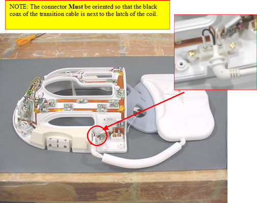

Illustration 3: Anterior Head And Chest Coil Assemblies

| NOTE: | The chest connector Must be oriented so that the black coax of the transition cable is next to the latch of the coil. See Illustration 2. |
Illustration 2: Chest Connector Orientation

Illustration 3: Anterior Head And Chest Coil Assemblies